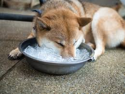

¡Bienvenido a la sección de
cuidados de mascotas de nuestra página web! Aquí encontrarás información valiosa y útil para mantener a tus
queridos compañeros peludos felices y saludables. Nuestra pasión por los animales nos motiva a compartir nuestro
conocimiento y experiencia para ayudar a crear hogares más saludables y felices para las mascotas en todo el
mundo. ¡Empecemos!
Ciudados Básicos
¿Cada cuánto bañar a un perro?
 La frecuencia del baño va
a depender de las características del perro y de sus condiciones de vida. Lo ideal sería bañarlo solo cuando
verdaderamente lo necesite, como 2-3 veces al año. En cualquier caso, nunca más de 1-2 veces al mes. Un
exceso es perjudicial para la salud de la piel. Por supuesto, si el perro padece algún problema
dermatológico, será el veterinario quien nos paute la frecuencia de lavados.
La frecuencia del baño va
a depender de las características del perro y de sus condiciones de vida. Lo ideal sería bañarlo solo cuando
verdaderamente lo necesite, como 2-3 veces al año. En cualquier caso, nunca más de 1-2 veces al mes. Un
exceso es perjudicial para la salud de la piel. Por supuesto, si el perro padece algún problema
dermatológico, será el veterinario quien nos paute la frecuencia de lavados.
¿Cómo refrescar a un perro?

- Proporcionale agua
Cuando hablamos de refrescar a un perro, seguro que lo primero en lo que pensamos es en el agua. Pero no
solo para remojarse o jugar: el agua es básica para su correcta hidratación. Todos los perros tienen que
tener a su disposición las 24 horas del día agua limpia y fresca.
- Dale cubitos de
hielo
El agua también puede congelarse para hacer cubitos de hielo, los cuales, sin duda, constituyen una buena
forma de refrescar a un perro. Se los podemos dar al perro directamente, ya que así ingiere más agua, se
refresca y se entretiene, o introducirlos en el bebedero, lo que mantendrá el agua fresca más tiempo.
- Mójalo con una toalla húmeda
Además de para hidratarse, el agua es un elemento genial a la hora de refrescar a un perro. Así pues, si te
preguntas cómo refrescar a un perro con agua, podemos mojarle pasándole una toalla o un paño humedecido en
agua fresca. En general, cualquier perro acepta esta maniobra. En cambio, el contacto directo con el agua en
bañera, piscina o mar no es admitido por todos los ejemplares. Hay que respetarlo y nunca forzarlos.
- Llévalo a darse un baño
Si el perro es amante del agua las posibilidades son infinitas. Podemos llevarlo de excursión a lugares con
agua, como la playa, siempre evitando caminatas o actividad física intensa en las horas de más calor.
Además, si dispones de terraza, patio o terreno, le encantará tener su propia piscina canina. No es
necesario que tenga grandes dimensiones.
- Prepara helados para perros
Los helados son un éxito seguro en temporada de calor, tanto para personas como para perros, aunque
¡prepárate para limpiar el suelo después! Si no queremos complicarnos, sirve con que les ofrezcamos los
cubitos de hielo o de caldo que hemos mencionado o un simple yogur natural, sin azúcar, previamente
congelado.
Pero también podemos elaborar recetas sencillas para refrescar al perro en casa. No sirven las que
preparamos para personas, sino que tendremos que buscarlas específicas para ellos. En este artículo tienes
una receta de helado para perros fácil de hacer. Nunca le des a tu
perro un helado para personas, pues suelen contener azúcares e ingredientes que no pueden comer.
- Protégelo del calor
Para ayudarlos a refrescarse es importante que sepamos cómo sudan los perros. Así, para regular su
temperatura corporal no sudan por todo el cuerpo como nosotros, sino que, básicamente, se valen del jadeo.
De esta manera intercambian el aire caliente de su interior con el del ambiente, que está más fresco. Pero
cuando el calor es considerable, este intercambio pierde eficacia. Por eso para mantener a un perro fresco
en verano es importante ofrecerle siempre un lugar resguardado y a la sombra.